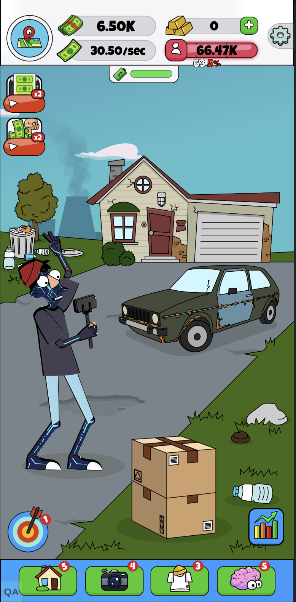
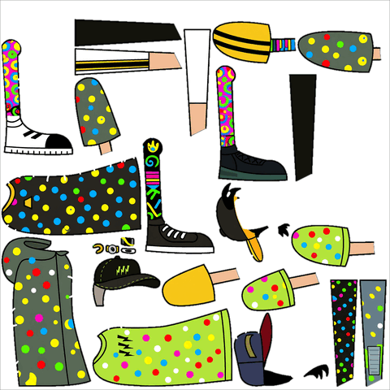
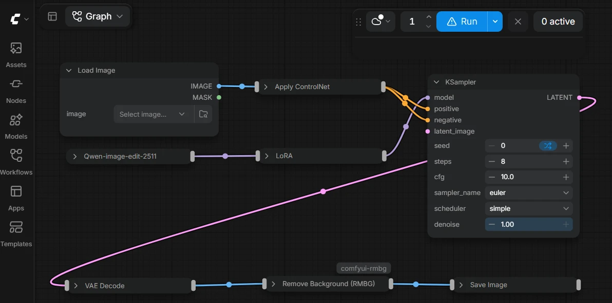

Character Re-skin
Lamar (idle simulation game)
Re-Skinning A Character Atlas With A Single Prompt

Role
- Architected ComfyUI node workflows
- Managed model fine-tuning
Cross-functional
project team
Game Owner, AI Tech Lead, Backend and DevOps Engineers
Target users
2D Artists, Game Owner
The challenge
Generate new characters with animations quickly, while maintaining high accuracy and brand identity

The solution
Re-skinning existing sprite atlases, allowing the reuse of rigs and animation files without manual realignment.
Bottlenecks and limitations
The new character needs to be relatively close in proportions and build to the original character. This can be solved by having a few sets of characters (e.g. women, men, children).
Character Re-skin
New animated characters, without new rigging
The challenge
Creating animations for new characters, with high accuracy and a consistent brand identity. Every new character meant creating a new atlas and rigging it by hand.
The workflow reuses existing atlases and animations by re-skinning them.
System architecture
The generative AI workflow is designed and run in ComfyUI.

- ControlNet
- Conditioning architecture
- Qwen-Image-Edit-2511
- Image edit model with a LoRA for brand consistency
- RMBG-2.0
- Background removal
Human in the loop
The first sprite sheet and animations are made by hand. Every re-skin starts from an existing, approved atlas and rig
The character idea comes from people. The game owner or artist defines the new character in the prompt
Limitations
The new character has to be close to the original in proportions and build, because the rig and part outlines are fixed. This can be solved with a small set of base characters (for example women, men and children), each re-skinned many times.